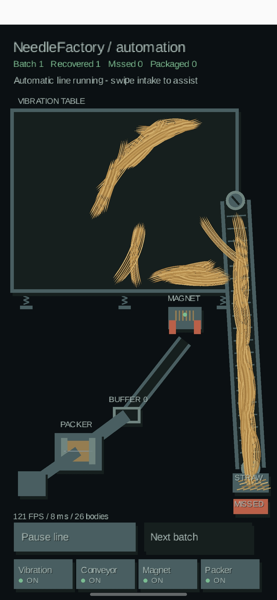

004 — Я хотел найти иголку. В итоге построил завод
Сначала я собирался сделать простую игру: стог сена, спрятанная иголка, палец по экрану — ищем. Что может быть проще?
Но потом я подумал: а зачем всё время копаться в сене руками? Мы же живём в XXI веке. Надо механизировать процесс!
И вот вместо стога сена на экране появилась целая производственная линия. Вибростол, конвейер, магнит, буфер, упаковщик. Смотрю на результат и понимаю: то ли это схема завода, то ли картина художника-абстракциониста, который слишком увлёкся киберпанком.
Особенно меня радует солома. Она уже не похожа на деревянные палочки из предыдущих версий — теперь это длинные тонкие волокна, которые живут своей жизнью. Местами даже чересчур самостоятельной.
На скриншоте написано NeedleFactory / automation. Есть Batch 1, Recovered 1, Missed 0, Packaged 0. Работают четыре модуля — Vibration, Conveyor, Magnet и Packer, все отмечены как ON. Видны кнопки Pause line и Next batch. Снизу по-прежнему бодрые 121 FPS, 8 ms, 26 bodies.
По крайней мере, какая-то механизация уже есть. А то, что конвейер пока напоминает лестницу в параллельную реальность, — это художественная особенность раннего прототипа. Будем считать, что так и задумано.
Вывод дня: хотел искать иголку в стоге сена, а теперь, кажется, придётся разбираться ещё и в промышленной логистике.

004 — I Wanted to Find a Needle. I Built a Factory Instead.
At first, I was going to make a simple game: a haystack, a hidden needle, and a finger swiping across the screen. How hard could it be?
Then I thought: why keep digging through straw by hand? It's the 21st century. Let's mechanize the whole thing!
And just like that, my haystack became an entire production line. A vibration table, conveyor, magnet, buffer, and packer. Looking at the result, I honestly couldn't tell whether I'd built a factory or commissioned a cyberpunk abstract painting.
The straw is a particular achievement. It no longer looks like the wooden sticks from earlier versions. Now it's made of long, thin strands with a mind of their own. Sometimes a little too much of a mind.
The screen says NeedleFactory / automation. It shows Batch 1, Recovered 1, Missed 0, and Packaged 0. Four modules — Vibration, Conveyor, Magnet, and Packer — are marked ON. There are Pause line and Next batch buttons. And at the bottom: a cheerful 121 FPS, 8 ms, and 26 bodies.
At least there's some actual mechanization now. As for the conveyor looking like a staircase into another dimension, let's call that an artistic feature of the early prototype.
Today's takeaway: I wanted to find a needle in a haystack. Somehow, I ended up needing to learn industrial logistics.